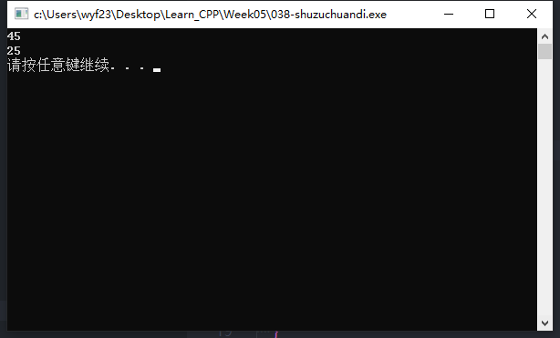
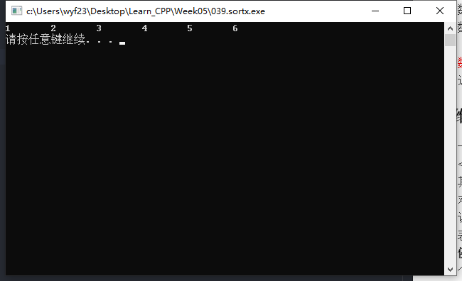
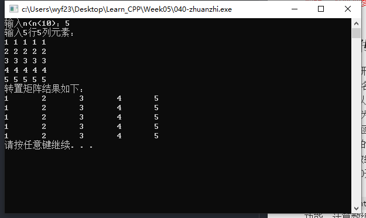

数组名作参数
- 数组元素作实参，对应的形参为变量，一次传递一个元素，采用值传递。
- 数组名作实参，对应的形参为一个数组，一次传递整个数组。
- 数组作实参，其参数传递可以理解为形参数组与实参数组共用同一数组空间（即共用实参数组空间）。因此，在函数中，使用形参数组就是在使用实参数组，改变形参数组元素的值，就是在改变实参数组的值，这一点与引用传递非常相似。
一维数组的传递
- 一维数组作为形参的声明格式：
<类型> <数组名> []
其中，[]中可以省了数组的长度值。（可认为形参与实参数组长度相同） - 对应的实参应为同类型的一维数组名。（仅用数组名）
- 说明：为了使函数知道需要处理的数组元素的个数，通常给函数再传递一个表示元素个数的整型数。
例如： 一维数组名作为函数的参数。编写函数，计算一个整型数组中从第m个元素（m从0开始）开始的n个元素之和。
函数设计
函数原型：int fun(int b[],int m,int n);
功能：计算数组b中从第m个元素开始的第n个元素之和。
主函数设计
定义并初始化一个整型数组a。
测试1：fun(a,0,10);//求从第0个元素开始的10 个元素之和
测试2：fun(a,3,5);//求从第3个元素开始的5个元素之和
函数代码1
2
3
4
5
6
7
8
9int fun(int b[], int m, int n)
{
int i, s = 0;
for (i = m; i < m + n; i++)
{
s = s + b[i];
}
return s;
}主函数代码
1
2
3
4
5
6
7
8
9int main()
{
int a[] = {0, 1, 2, 3, 4, 5, 6, 7, 8, 9};
int fun(int b[], int m, int n);
cout << fun(a, 0, 10) << endl;
cout << fun(a, 3, 5) << endl;
system("pause");
return 0;
}执行结果
例如： 编写一个函数sort，对n个元素的一维整型数组b进行从小到大排序
函数定义如下
1
2
3
4
5void sort(int b[],int n)//b为一维数组，n为元素的个数
{
//选用一种排序方法对n个元素的b数组排序
//对b数组排序，实际就是对实参数组排序
}主函数中的函数调用语句：
1
2
3sort(a,10);
//调用sort函数，对10个元素的整型数组a进行排序
//函数调用后，并输出排序结果，即输出a数组中各个元素值。示例代码
1
2
3
4
5
6
7
8
9
10
11
12
13
14
15
16
17
18
19
20
21
22
23
24
25
26
27
28
29
30
31
32
using namespace std;
int main()
{
int a[] = {6, 1, 3, 2, 5, 4};
void sort(int b[], int n);
sort(a, 6);
for (int i = 0; i < 6; i++)
{
cout << a[i] << '\t';
}
cout << endl;
system("pause");
return 0;
}
void sort(int b[], int n)
{
int i, j;
for (i = 0; i < n - 1; i++)
{
for (j = 0; j < n - 1 - i; j++)
{
if (b[j] > b[j + 1])
{
int temp;
temp = b[j];
b[j] = b[j + 1];
b[j + 1] = temp;
}
}
}
}执行结果

二维数组的传递
二维数组作形参的声明格式
<类型> <数组名>[][<列数>]
其中：<列数>为场数，不能省略，行数可缺省。调用时的实参应为同类型的二维数组名。
例如： 二维数组名作为参数。编写一个函数，将N阶方阵转置。（N<10）
函数设计
1
2void transmat(int a[][10],int n);
//对a数组中前n行n列矩阵元素转置主函数设计
- 定义一个10行10列的大数组x，元素类型为整型；键盘输入一个整数n（n<10）；键盘输入一个n*n的方阵数据并存放到数组的前n行n列元素中。
- 函数调用语句为transmat(x,n);
- 按n行n列输出转置矩阵。
示例代码
1
2
3
4
5
6
7
8
9
10
11
12
13
14
15
16
17
18
19
20
21
22
23
24
25
26
27
28
29
30
31
32
33
34
35
36
37
using namespace std;
int main()
{
int x[10][10], n;
void transmat(int a[][10], int n);
cout << "输入n(n<10)：";
cin >> n;
cout << "输入" << n << "行" << n << "列元素：" << endl;
for (int i = 0; i < n; i++)
for (int j = 0; j < n; j++)
cin >> x[i][j];
transmat(x, 10); //调用
cout << "转置矩阵结果如下：" << endl;
for (int i = 0; i < n; i++)
{
for (int j = 0; j < n; j++)
cout << x[i][j] << '\t';
cout << endl;
}
system("pause");
return 0;
}
void transmat(int a[][10], int n)
{
int t;
for (int i = 0; i < n - 1; i++)
{
for (int j = i; j < n; j++)
{
t = a[i][j];
a[i][j] = a[j][i];
a[j][i] = t;
}
}
}执行结果
